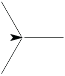
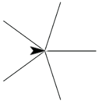
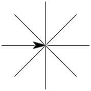

What you will do: Turn the scripts you have built into a single block, with an input, that draws squares, triangles, and circles. You will give it a second input to control the size. You'll make a variation that draws stars. On the next page, you'll combine these to do flags or artwork.


What you will learn: Abstraction—giving blocks inputs to let them do a wider variety of jobs.
A 360° turn is a full turn. Half of that (180°) was a half turn. A fourth of that was a quarter turn. You don't have to do the division yourself. Snap! can compute for you. You can use or to get a seventh of a turn or a third of a turn.
-
In the Snap! frame below, experiment to make scripts that draw , , and .
A script is a sequence of instructions that tells a computer what to do. A program is a set of scripts. In some programming languages, like snap, you program by dragging blocks (individual instructions) and snapping them together. In other languages, you type the instructions. The idea is the same.